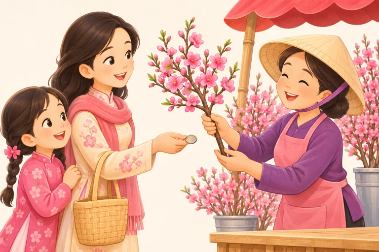

decorate the house
trang trí nhà
DECORATETHEHOUSE
I will decorate the house for Tet.
Chưa đánh dấu
Unit 12 · Học trước, thử nhớ rồi luyện đề
Chuẩn bị và lên kế hoạch đón Tết. Có âm thanh kèm bài, nghe chậm và đánh vần.
Unit 12 có âm thanh đi kèm (giọng máy Anh Mỹ). Em có thể nghe dù máy chưa cài giọng Anh. Nếu lỗi mạng, bấm nghe lại hoặc chọn giọng thiết bị nếu có.
Bấm Nghe khi em sẵn sàng. Trang không tự phát âm thanh.
Nghe cả từ/cụm, đọc theo rồi dùng ABC để nhớ cách viết. ABC đọc tên chữ cái, không phải bài luyện âm. Với cụm nhiều từ, các nhóm chữ được tách riêng.
Chưa có từ cần ôn. Em chọn một nhóm rồi bấm “Cần ôn lại” ở từ muốn luyện thêm nhé.
trang trí nhà
I will decorate the house for Tet.
Chưa đánh dấu

đi mua sắm
I will do the shopping for Tet.
Chưa đánh dấu

làm nem/cuốn chả giò
I will make spring rolls for Tet.
Chưa đánh dấu

mua một cành hoa đào
I will buy a branch of peach blossoms for Tet.
Chưa đánh dấu
gói/làm bánh chưng
My mother will make banh chung.
Chưa đánh dấu
mua hoa hồng
I will not buy roses.
Chưa đánh dấu
nhà ông bà của tôi
I will go to my grandparents’ house at Tet.
Chưa đánh dấu
buổi trình diễn pháo hoa
I will go to a fireworks show at Tet.
Chưa đánh dấu
tiệc năm mới
I will go to a New Year party at Tet.
Chưa đánh dấu
lễ hội hoa
I will go to a flower festival at Tet.
Chưa đánh dấu
sẽ
We will decorate the house.
Chưa đánh dấu
sẽ không
I will not make banh chung.
Chưa đánh dấu
vào dịp Tết
We will visit our grandparents at Tet.
Chưa đánh dấu
để đón Tết
I will do the shopping for Tet.
Chưa đánh dấu
Nghe hội thoại rồi đọc theo. “Đến lượt em” chỉ đọc A để em nói câu trả lời của B.
A: Will you decorate the house for Tet?
B: Yes, I will. I will decorate it with flowers.
Will + nguyên mẫu; đáp Yes, I will.
A: Will you make banh chung?
B: No, I will not. I will make spring rolls.
Phủ định việc đầu, rồi nói việc sẽ làm.
A: Where will you go at Tet?
B: I will go to my grandparents’ house.
Where hỏi nơi đến.
A: Will you go to a flower festival?
B: No, I will not. I will go to a fireworks show.
Hai sự kiện khác nhau; nghe cả câu phủ định.
A: What will you do for Tet?
B: I will do the shopping with my father.
Will + do; with là cùng với.
A: Where will your family go at Tet?
B: We will go to a New Year party.
Will không đổi theo chủ ngữ.
Ví dụ tự soạn. Vị trí và sở thích là giả định theo từng ví dụ. Trang không thu âm hoặc tự chấm giọng của em.
Mỗi nhóm có bốn bài nhỏ, không giới hạn thời gian. Em được sửa rồi thử lại. Câu trả lời tự lưu để quay lại làm tiếp.